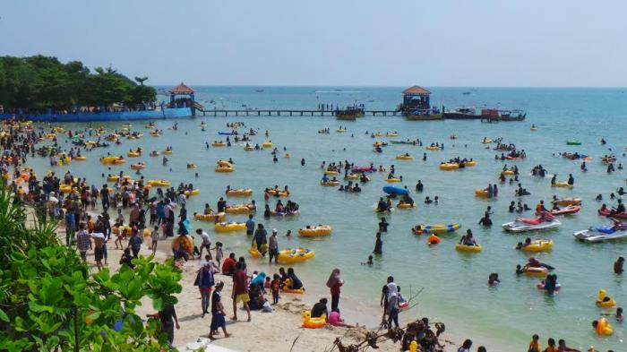

Pantai Bandengan

Pantai Tirto Samudro atau Pantai Klein Scheveningen atau yang dikenal oleh masyarakat umum dengan sebutan Pantai Bandengan adalah pantai yang terletak 7 km sebelah utara dari pusat kota Jepara, Jawa Tengah.[1] Pantai berpasir putih ini banyak dikunjungi untuk melihat matahari terbit dan matahari terbenam. Pantai ini juga acap digunakan untuk acara tingkat nasional maupun internasional berupa festival layang-layang dan ajang motor kross.